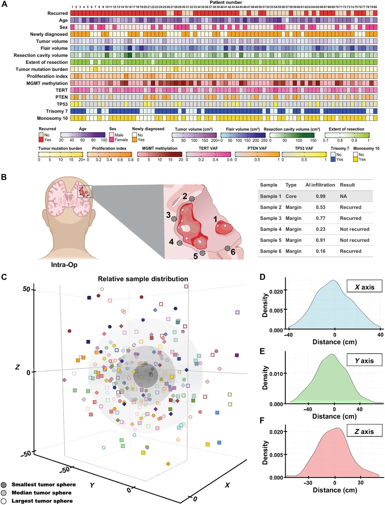
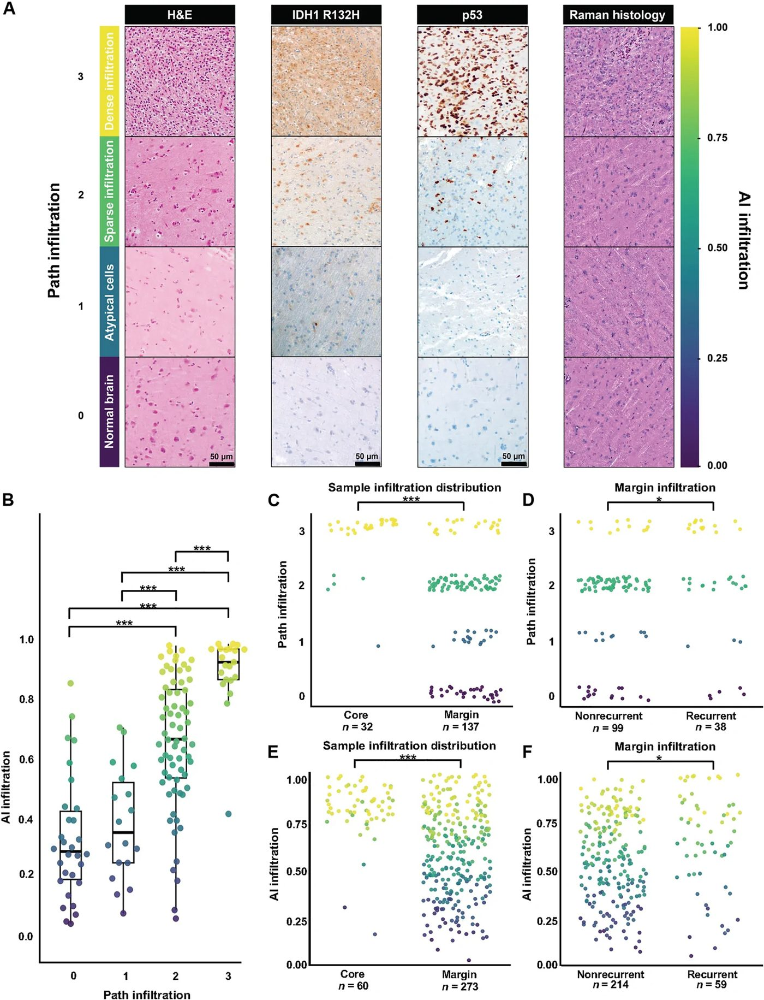

Оптикалық микроскопия мен жасанды интеллект глиобластоманың қайталануын болжайды


Суреттің толық сипаттамасы
Оқыту когортасы үшін пациенттер мен үлгілердің сипаттамалары. (A) UCSF оқыту когортасының барлық пациенттерінің (n = 60) жеке сипаттамаларын, соның ішінде клиникалық, радиологиялық және молекулалық белгілерін егжей-тегжейлі көрсететін онкопринт. (B) Резекциядан өткен пациенттерден ісік орталығынан бір үлгі және шеттерінен әртүрлі үлгілер алынып, SRH көмегімен пиксел деңгейінде талданатын зерттеудің жұмыс процесінің схемалық бейнесі. Әрбір үлгі үшін нәтиже инфильтрация мәні болып табылады. Иллюстрация авторы: Н. Сиривансанти. (C) Ең кіші, медианалық және ең үлкен ісік көлемдері визуалды түрде көрсетілген, Евклид қашықтықтарын пайдалана отырып, әрбір пациенттің шеткі үлгілерінің ісікке қатысты салыстырмалы таралуы. (D) x, y және z осьтері бойынша 0 айналасында орталықтандырылған үлгілердің униполярлы және шамамен симметриялы таралуын көрсететін ядролық тығыздық графиктері.
Глиобластома — мидың ең қатерлі ісіктерінің бірі, ол барлық дерлік пациенттерде қайталанады. Негізгі қиындық — жаңа ошақтың нақты қай жерде пайда болатынын алдын ала білу. Зерттеушілер бояуды қажет етпейтін оптикалық микроскопия мен жасанды интеллектті біріктіруді ұсынды. Бұл әдіс ота кезінде-ақ ісік жасушаларының тіндік шекараларға енуін бағалауға және рецидивтің орнын болжауға мүмкіндік береді.
Басты ойлар
- Стимуляцияланған Раман гистологиясы бояусыз-ақ ісік инфильтрациясын бағалайды
- FastGlioma алгоритмі рецидив аймақтарын 80% AUC дәлдігімен болжайды
- Оптикалық инфильтрация көрсеткіші генетикалық маркерлерге қарағанда ақпараттырақ
Толығырақ
Глиобластома (мидың жоғары дәрежелі қатерлі ісігі) қайталу сипатымен ерекшеленеді, бұл пациенттердің 75%-ында отадан кейінгі қуыс шеттерінде байқалады. Ісіктің қайта өсу нүктелерін болжау үшін стимуляцияланған Раман гистологиясы (SRH — бояуды қажет етпейтін оптикалық микроскопия) және FastGlioma алгоритмі қолданылды. Модель жаңа алынған тіндердің биохимиялық контрасты негізінде ісік инфильтрациясының деңгейін (AI-infiltration) бағалайды.
Зерттеуде IDH гені жабайы түрдегі глиобластомасы бар 80 пациенттің когортасынан алынған 367 тін үлгісі мен 133 454 оптикалық кескін талданды. Қайталанған аймақтардан алынған үлгілердегі AI-infiltration деңгейі қайталанбаған аймақтармен салыстырғанда статистикалық мәнді түрде жоғары болды (P = 0.03). AI-infiltration, клиникалық және молекулалық параметрлерді біріктірген Random Forest машиналық оқыту классификаторы валидациялық когортада (n = 20) ROC қисығы астындағы ауданы (AUC) 80% білдірді.
AI-infiltration оптикалық көрсеткіші TERT, TP53 гендеріндегі мутациялар немесе MGMT промоторының метилденуі сияқты стандартты молекулалық маркерлерден асып түсіп, рецидивті болжаудың ең басты факторына айналды. Модель әрбір үлгі алынған нүктеден 5 және 10 мм радиуста жергілікті қайталану қаупін сәтті болжады.
Шектеулер
Зерттеу екі орталықтың шағын пациенттер тобымен шектелген және клиникалық практикаға енгізер алдында проспективті тексеруді талап етеді.
Мақаланың толық аудармасы
Түйіндеме
Стандартты емдеу әдістерінен кейін қатерлі ісіктің ошақты қайталануы (рецидив) қатты ағзалардың қатерлі ісіктерімен байланысты жоғары өлім-жітімнің негізгі себептерінің бірі болып табылады. Рецидивті басқару глиобластомасы (ГБМ) бар науқастар үшін ерекше қиын, өйткені бұл өмір сүрудің медианалық ұзақтығы 17 айды құрайтын өлімге әкелетін ауру (1). Бастапқы диагноз кезіндегі стандартты емдеу максималды қауіпсіз резекцияны және одан кейінгі сәулелік және химиотерапияны қамтиды, бұл жалпы өмір сүру ұзақтығын жақсартады; алайда, бұл терапиялар тұрақты емес, өйткені барлық дерлік науқастарда рецидив байқалады (2–4). Бастапқы емдеу сәтсіз болғаннан кейін аурудың кейінгі кезеңдерін басқару науқастың өмір сүруіне әсер ететін іргелі мәселе болып табылады, ал соңғы жиырма жылда тиімді терапия әдістері жоқ. Шамамен 130 клиникалық сынақ ГБМ рецидиві бар науқастар үшін тиімділікті көрсете алмады, ал онымен байланысты шығындар 1,5 миллиард АҚШ долларынан асты (5, 6). ГБМ рецидиві әрбір төрт науқастың үшеуінде резекция қуысында немесе оның жиектерінде пайда болады (1, 4, 7). Ісік рецидиві орын алғаннан және радиографиялық тұрғыдан айқын болғаннан кейін оны бағалау үшін бірнеше құрылымдық және метаболикалық бейнелеу әдістері әзірленді (8). Алайда, көптеген науқастарда ісік рецидивінің бастапқы ауру ошағына жақындығын ескере отырып, хирургиялық жиектегі микроскопиялық ісік инфильтрациясын сандық бағалау болашақ рецидивті болжау мүмкіндігіне ие. Клиникалық үлгілердің дәстүрлі гистологиясы уақыт пен еңбекті қажет етеді, бұл ауқымдылықты шектейді (9–12). ГБМ инфильтрациясын өңделмеген хирургиялық тіндердің көмегімен жасанды интеллект (ЖИ) арқылы бағалау бұл мәселені шешеді, мұнда оптикалық микроскопия [стимулданған Раман гистологиясы (SRH)] 11 000-нан астам ми ісігі тіндерінің үлгілері деректер жиынтығында оқытылған визуалды іргелі модельдермен біріктіріледі (13–21). Мұнда біз FastGlioma деп аталатын, ашық бастапқы коды бар, ЖИ-ге негізделген ісік инфильтрациясы моделінің көмегімен ГБМ рецидивінің болжағышын әзірлеуді мақсат еттік, ол бастапқы хирургиялық резекция кезінде алынған ісік жиегінің үлгілері негізінде өлшенеді. ГБМ-мен ауыратын, рецидиві бар және жоқ науқастар популяциясы әрбір үлгі алынған жерден 5 және 10 мм қашықтықта рецидивті болжау үшін ЖИ моделін оқытуда қолданылды. ГБМ резекциясының жиектерінен алынған тіндердің үлгілері дәрігерлерге болашақ рецидивті болжайтын клиникалық тұрғыдан маңызды ақпаратты ұсына алады, бұл стандартты емдеу әдістері жоқ аурудың кеш кезеңдерінде мақсатты, дәл медицина және ісікке бағытталған терапиялар үшін жол ашады.
2022 жылдың мамыры мен 2025 жылдың наурызы аралығында гистопатология мен стимулданған Раман гистологиясын (SRH) талдау үшін тіндер үлгілерін кеңістіктік аннотациялаумен ісік резекциясынан және ісік жиегінен үлгі алудан өткен IDH-жабайы типті ГБМ-мен ауыратын науқастардан көпұлтты, көп орталықты науқастар когортасы қалыптастырылды. Бүкіл когорта 84 науқастан тұрды, оның 60-ы Сан-Францискодағы Калифорния университетінен (UCSF) және 24-і Вена медициналық университетінен болды. Мекемелер арасында жиек үлгілерінің таралуы әртүрлі болғанымен (Rasm SN, fig. S2A), 25%-дан аз, 26–50% және 51–75% ісік жиегі үлгілері бар науқастарды талдау кезінде мекемелер арасында прогрессиясыз өмір сүру ұзақтығында айырмашылықтар анықталмады (Rasm SN, fig. S2B). Мекемелерде үлгі алудағы біржақтылық қаупін ескере отырып, талдауларымыздың қалған бөлігі UCSF когортасы аясындағы даму деректер жиынтығында, UCSF денсаулық сақтау жүйесінен тағы 20 науқастан тұратын қосымша перспективалық ішкі валидациялық когортамен өткізілді. UCSF 60 науқастан тұратын оқыту когортасы ішінде 43 ГБМ Response Assessment in Neuro-Oncology (RANO) 2.0 критерийлері негізінде рецидив берді (1-сурет A). Когорталар арасында демографиялық (жынысы мен жасы), клиникалық (қосымша химио-сәулелік терапия) немесе радиографиялық (ісік көлемі, FLAIR көлемі және резекция дәрежесі) сипаттамаларда айтарлықтай айырмашылықтар анықталмады (1-сурет A және 1-кесте). Ісігі рецидив берген науқастар рецидив болмағандарға қарағанда TP53 мутацияларының айтарлықтай жоғары пайызын көрсетті (47-ге қарсы 18%, P = 0,05, Фишердің нақты сынағы).
Маңызды
60 науқаста оқытылған FastGlioma ЖИ моделі TP53 мутациялары рецидивті ГБМ-де жиі кездесетінін (47% қарсы 18%) және резекция көлемі мен инфильтрация негізгі болжағыштар екенін көрсетті.
SRH көмегімен микроскопиялық ГБМ инфильтрациясын бағалау үшін резекция қуыстарының хирургиялық жиектерінен жаңа тіндер үлгілері алынды (1-сурет B) (17, 21). SRH арқылы хирургиялық үлгілерде белгісіз оптикалық бейнелеу жүзеге асырылды, мұнда кескін контрасты үлгінің ішкі биохимиялық қасиеттерінен пайда болды, бұл тіндерді бояуға немесе дақтарға деген қажеттілікті болдырмады. SRH іргелі моделі FastGlioma-дан ГБМ инфильтрациясы балы алынды, ол AI-infiltration деп аталады және 13 медициналық орталықтан алынған тіндер негізінде құрылған және орталық жүйке жүйесі ісіктерінің диагностикалық спектрін қамтитын 3000-нан астам науқастың бейнелеу деректерін қамтыды (21). FastGlioma моделі бүкіл слайдтық SRH кескініндегі ісік инфильтрациясы дәрежесін көрсететін 0-ден 1-ге дейінгі бірыңғай скалярлық мәнді шығару үшін сызықтық слайдты баллдау қабатын пайдаланады. Ошақты рецидивтің бастапқы жерлерін анықтау үшін модельді оқыту 273 үлгіні қамтитын 60 науқаста өткізілді, мұнда әрбір науқас үшін жиекте алынған жерлердің медианалық саны 4,5-ті (3,0-ден 5,0-ге дейін) құрады, рецидивті және рецидивсіз когорталар арасында үлгі санында айтарлықтай айырмашылық жоқ (1-кесте). Рецидивті науқастар когортасында рецидивке дейінгі медианалық уақыт 5,5 айды (3,0-ден 9,3-ке дейін) құрады. Сарапшы бақылауымен қолмен тексеру арқылы үлгілер рецидивті немесе рецидивсіз деп белгіленді. Интраоперациялық навигациялық скриншоттарды, операциядан кейінгі бейнелеуді және рецидив кезіндегі бейнелеуді салыстыру арқылы 59 үлгі орны рецидив орындары, 214-і рецидивсіз орындар деп белгіленді.
Ісікке немесе резекция қуысына тікелей жақын аймақтардан алынған жиек үлгілері әрбір науқастың негізгі үлгісі (анықтамалық координат ретінде пайдаланылған) мен олардың тиісті жиек үлгілері арасындағы Евклид қашықтығын есептеу арқылы үш өлшемді (3D) кеңістікте кеңістіктік картаға түсірілді (1-сурет C). Бұл тәсіл науқастар арасында салыстырмалы кеңістіктік орналасуды стандарттау үшін пайдаланылды. Бұл графикті визуалды тексеру әрбір резекция қуысы айналасында үлгілердің айтарлықтай кластерленусіз кең таралуын көрсетті. Ядро тығыздығы графиктері үлгілердің x, y және z осьтері бойынша унимодальды және шамамен симметриялық таралуын көрсетті, бұл үлгілердің қалыпты таралуын одан әрі растайды (1-сурет D). Үлгі таралуын одан әрі бағалау үшін жиек үлгілері арасындағы жұптық қашықтықтардан алынған орташа SD үлгі дисперсиясындағы өзгергіштік өлшемі ретінде пайдаланылды (Rasm SN, fig. S4A). Рецидив берген және бермеген науқастар арасында үлгі дисперсиясы дәрежесінде айтарлықтай айырмашылық жоқ, бұл когорталар арасында науқастар ішінде үлгілердің салыстырмалы таралуын көрсетеді (рецидивсіз: 17 ± 5,7 мм; рецидивті: 17 ± 5,4 мм; P = 0,98, тәуелсіз t-сынағы). Рецидивті үлгілердің ядроға жақынырақ алынғандығы және сондықтан күтілетін жоғары инфильтрация дәрежесіне ие болуы мүмкін деген әлеуетті біржақтылықты бағалау үшін әрбір жиек үлгісінің өз негізгі үлгісіне дейінгі қашықтығы есептелді (Rasm SN, fig. S4B). Бұл қашықтық рецидив берген және бермеген үлгілер арасында салыстырылғанда, айтарлықтай айырмашылық жоқ [рецидивсіз: 29 мм (21-ден 39-ға дейін); рецидивті: 32 мм (22-ден 44-ке дейін), P = 0,18, Уилкоксон ранг-сумма сынағы].
Түсіндірме
SRH (стимулданған Раман гистологиясы) — тіндерді бояусыз көруге мүмкіндік беретін, молекулалар тербелісін талдайтын бейнелеу әдісі. FastGlioma — осы деректер негізінде ісік инфильтрациясы дәрежесін бағалайтын ЖИ моделі.
Невропатолог авторлас М.П. ісік инфильтрациясының рецидивке әсерін анықтау үшін гистологиялық және оптикалық микроскопия әдістерін пайдалана отырып, резекция қуысының жиектерінен алынған тіндерді талдады. Гематоксилин және эозин (H&E) және p53 бояуын пайдалана отырып, невропатолог бағасы әрбір үлгідегі ісік инфильтрациясы дәрежесін (path-infiltration деп аталады) ретке келтірді. p53 жабайы типті жағдайларда, ісік жасушалары H&E боялған әдеттегі слайдтарда морфология (яғни, үлкейген ядролар, ретсіз ядро шекаралары, гиперхромазия және т.б.) негізінде анықталды. Әрбір үлгідегі жол инфильтрациясы расталған төрт сатылы шкала бойынша реттік метрикалық оқыту үшін аннотацияланды: (0) қалыпты ми тіні/ісік жоқ; (1) атипті жасушалар/ықтимал ісік, бірақ нақты емес; (2) сирек ісік инфильтрациясы; (3) тығыз ісік инфильтрациясы (21) (2-сурет A). Path-infiltration үшін ісік үлгілері 32 науқастан 32 негізгі үлгі және 137 жиек үлгісінен тұратын деректер жиынтығын құрады. ЖИ ақпаратты белгісіз оптикалық микроскопия жақында жарияланған FastGlioma моделіне негізделіп, резекция қуысының жиектерінен алынған үлгілердің бүкіл слайдтық оптикалық кескіндері үшін нормаланған ісік инфильтрациясы мәнін (AI-infiltration деп аталады) жасау үшін пайдаланылды (21). Патолог тарапынан аннотацияланған тіндер инфильтрациясы (path infiltration) мен AI-infiltration арасындағы байланыс топтар бойынша өлшемдер бойынша инфильтрация корреляциясын көрсетті (2-сурет B). Реттік тағайындалған патолог инфильтрациясы үлгілері үшін медианалық AI-infiltration келесідей болды: 0, ісік анықталмаған = 0,31 (0,22-ден 0,45-ке дейін); 1, атипті жасушалар = 0,38 (0,28-ден 0,54-ке дейін); 2, сирек ісік инфильтрациясы = 0,68 (0,55-тен 0,84-ке дейін); және 3, тығыз ісік инфильтрациясы = 0,93 (0,88-ден 0,98-ге дейін). Әрбір гистопатология тобы үшін медианалық инфильтрацияны салыстыру үшін Бонферрони түзетуімен жұптық Уилкоксон ранг-сумма сынақтары өткізілді. 0 және 2 (P = 1,9 × 10⁻⁷), 0 және 3 (P = 2,0 × 10⁻¹¹), 1 және 2 (P = 8,7 × 10⁻¹¹), 1 және 3 (P = 1,3 × 10⁻⁸) және 2 және 3 (P = 5,4 × 10⁻⁶) арасында айтарлықтай айырмашылықтар байқалды, 0 және 1 топтары арасында айтарлықтай айырмашылық табылмады (P = 1,0).
Барлық ісік ядросы үлгілері инфильтративті ісік жасушаларын көрсеткенін растау үшін path infiltration таралуы ядро үлгілері мен жиек үлгілері арасында салыстырылды (2-сурет C). Ядродан алынған үлгілер жиек үлгілеріне қарағанда ісік жасушаларының айтарлықтай жоғары медианалық инфильтрациясын көрсетті [ядро: 3 (3-тен 3-ке дейін); жиек: 2 (1-ден 2-ге дейін), P = 5,0 × 10⁻¹¹, Уилкоксон ранг-сумма сынағы]. Инфильтрация мен рецидив арасындағы байланысты үлгі (науқас емес) деңгейінде анықтау үшін жиек үлгілері рецидив берген (n = 38) және рецидив бермеген (n = 99) үлгілер когорталарына бөлінді. Рецидив берген ісік жиегі үлгілері гистологиялық тұрғыдан белгіленген инфильтрацияның айтарлықтай үлкен дәрежесін көрсетті (рецидивсіз үлгілер медианалық балы: 2 (0-ден 2-ге дейін), асимметрия: -0,40; рецидивті үлгілер медианалық балы: 2 (1-ден 3-ке дейін), асимметрия: -0,53, P = 0,02, Уилкоксон ранг-сумма сынағы) (2-сурет D). Бұл нәтижелер ядро (n = 60) және жиек үлгілері (n = 273), сондай-ақ рецидивті (n = 59) және рецидивсіз үлгілер (n = 214) үшін ЖИ жасаған инфильтрацияны салыстырғанда да өз күшінде қалды. Ядро үлгілері үшін медианалық AI-infiltration жиек үлгілерінікінен айтарлықтай жоғары болды [ядро: 0,95 (0,91-ден 0,98-ге дейін); жиек: 0,61 (0,41-ден 0,87-ге дейін), P = 8,0 × 10⁻¹⁷, Уилкоксон ранг-сумма сынағы] (2-сурет E), және рецидивті жиек үлгілеріндегі медианалық AI-infiltration рецидив бермеген жиек үлгілерінікінен айтарлықтай жоғары болды (рецидивсіз: 0,60 (0,41-ден 0,86-ға дейін); рецидивті: 0,74 (0,50-ден 0,90-ға дейін), P = 0,03, Уилкоксон ранг-сумма сынағы) (2-сурет F). Инфильтрация мен ошақты рецидив арасындағы байланысты анықтау үшін болжағыш ретінде тек path infiltration (mAUC = 0,59 ± 0,20) және болжағыш ретінде тек AI-infiltration (mAUC = 0,62 ± 0,17) пайдаланып логистикалық регрессия жүзеге асырылды (Rasm SN, fig. S5). Бұл нәтижелер ісік ядросы мен жиек үлгілеріндегі гистопатология мен ЖИ жасаған ГБМ инфильтрациясы өлшемдері арасындағы ұқсастықтарды болжайды, олар жеке-жеке ошақты рецидивті жеткілікті дәрежеде болжамайды. Ісік инфильтрациясын қамтитын факторлардың күрделі өзара әрекеттесуі қатты ағзалар ісігі рецидивін белгілейтінін ескере отырып, келесі қадам инфильтрация, онкологиялық және клиникалық айнымалыларды пайдалана отырып, ГБМ рецидивінің болжамды моделін құру болды.
Бірнеше онкологиялық және молекулярлық айнымалылар ГБМ рецидивімен байланысты. Алайда, қандай белгілер ошақты рецидивті болжайтыны белгісіз болып қалуда. ГБМ рецидиві үшін машиналық оқыту модельдері әзірленді, олар үлгі және жеке науқас деңгейіндегі айнымалыларды, соның ішінде AI-infiltration, клиникалық айнымалылар, онкологиялық айнымалылар және мақсатты келесі ұрпақ секвенирлеуін қамтиды. Модельді таңдау және оқыту үшін жұмыс процесі Rasm SN, fig. S6-да көрсетілген. Таңдалған айнымалылар көмегімен алты классификатор моделі тексерілді: логистикалық регрессия (LR), k-ең жақын көршілер (k-NN), тірек векторлық машиналар (SVM), кездейсоқ орман (RF), градиенттік күшейтілген ағаштар (GBT) және экстремалды GBT (XGB) (3-сурет A). Әрбір модель 10-қабатты стратификацияланған ішкі өзара тексеру көмегімен оқытылды. RF 87% ± 10 mAUC-пен рецидив үшін ең болжамды модель болып шықты. Рецидив моделі кейіннен 98 ісік жиегі үлгісін қамтитын, 80% AUC (95% сенім аралығы: 0,64-тен 0,97-ге дейін; 2000 қайта үлгі алумен бутстреп) берген ГБМ-мен ауыратын 20 қосымша науқастан тұратын бірегей перспективалық ішкі когорта көмегімен валидацияланды. Әрбір классификатор моделі үшін белгілер салмағы анықталды және әрбір айнымалының модель жұмысына қосқан үлесі талданды. AI-infiltration сыналған алты классификатордың бесеуінде ең болжамды айнымалы деп табылды (3-сурет B). RF моделіндегі әрбір айнымалы үшін Shapley қосымша түсіндіру мәндері әрбір айнымалының модель жұмысына қосқан үлесі мен бағытын анықтады (3-сурет C). AI-infiltration рецидивті болжауға үлкен үлес қосты, мұнда инфильтрацияның күшеюі рецидив ықтималдығының жоғарылығына, инфильтрацияның кемуі рецидив ықтималдығының төмендігіне әкелді.
Маңызды
Кездейсоқ орман (RF) моделі рецидивті болжауда ең жақсы дәлдікті (AUC 87%) көрсетті, мұнда AI-infiltration көрсеткіші қауіпті белгілейтін негізгі фактор болды.
Модель таңдалғаннан кейін, модельдің жалпылануы 80% AUC шегімен клиникалық пайдалылықты сақтай отырып, жиек үлгісі рецидивін болжау үшін қажетті минималды тиімді айнымалылар санын анықтау арқылы бағаланды. Бұл 80% AUC шегімен қолмен кері белгілерді жою арқылы жүзеге асырылды, мұнда ең аз салмақты айнымалы әрбір итерацияда шекті сақтау үшін қажетті минималды айнымалылар санына жеткенше жойылды. Бұл RF моделі жиек үлгісі рецидивін үш айнымалымен болжай алатынын көрсетті: AI-infiltration, жасы және резекция қуысының көлемі (AUC = 82% ± 12) (3-сурет D).
Біз резекция қуысының көлемін айнымалы ретінде сызықтық регрессия көмегімен операцияға дейінгі ісік көлемімен байланысын бағалау арқылы қосымша тексердік және айтарлықтай байланысты таптық, алайда орташа детерминация коэффициенті (R²) көп факторлы табиғатты көрсетеді (β = 0,52, P < 2,0 × 10⁻¹⁶; R² = 0,40).
ГБМ-нің рецидив беру бейімділігі химио-сәулелік терапияға төзімді және мида ошақты аймақтық өкілдікке ие болуы мүмкін қатерлі жасуша субпопуляцияларына байланысты. Рецидив модельдері рецидив орнын болжау үшін жетілдірілді. Әрбір үлгіге қатысты рецидив жақындығын болжау қабілетімізді бағалау үшін біз 5 мм және 10 мм қашықтықта рецидивті болжау үшін бұрын таңдалған айнымалылар жиынтығымен RF классификациясын пайдаландық. Бұл модельдер 5 мм (mAUC: 80% ± 10) және 10 мм (mAUC: 76% ± 13) қашықтықта рецидивті болжауда жақсы жұмыс істеді (4-сурет A). AI-infiltration-ның бұл модельдердің болжануына қосқан үлесін түсіну үшін ішінара тәуелділік графиктері жасалды, олар барлық басқа айнымалылар тұрақты болғанда AI-infiltration-ның 5 және 10 мм қашықтықта рецидив ықтималдығына әсерін көрсетті (4-сурет, B және C). Бейнелеу мысалы кеңістіктік рецидив ықтималдығы болжамдарын көрсетеді. Науқастың гадолиний енгізгеннен кейінгі T1 магниттік-резонанстық томография (МРТ) скандары үш уақыт нүктесі үшін көрсетілген: (i) операцияға дейін 24 сағат бұрын, (ii) операциядан 48 сағат кейін және (iii) ісік рецидивін анықтаған 9 айлық бақылау МРТ (4-сурет D). Науқастың үлгілері кейіннен олардың бастапқы ісігінің 3D кескінімен бірге графикте көрсетілді. Әрбір үлгіден 5 (P5mm) және 10 мм (P10mm) қашықтықта рецидив ықтималдығын білдіретін сфералар сызылды (4-сурет E). Бастапқы ісік алып тасталғанда, артқы жиек бойымен 1-үлгі 0,60 AI-infiltration, 73% P5mm және 87% P10mm көрсетті. Төменгі жиек бойымен 2-үлгі 0,94 AI-infiltration, 72% P5mm және 90% P10mm көрсетті. 2-үлгі бейнелеу арқылы анықталған рецидивке сәйкес келді.
Абайлаңыз
Зерттеу максималды резекциядан өткен науқастар деректеріне негізделген; модельдің операция жасауға келмейтін ісіктерге қолданылуы қосымша зерттеуді талап етеді.
ГБМ ісік резекциясы, цитотоксикалық химиотерапия, сәулелік терапия және мақсатты молекулярлық терапияларға қарамастан, жиі рецидив беруіне байланысты ең қиын және өлімге әкелетін диагноздардың бірі болып қалуда. Рецидив көбінесе резекция қуысының жиектерінде пайда болады (4). Емдеу сәтсіздігінің аймақтық ерекшелігін локализациялау үшін біз осы зерттеуде рецидивтің оптикалық микроскопия ЖИ-инфильтрация модельдерін сынап көрдік және ішкі валидацияладық. Ісік инфильтрациясын жылдам сандық бағалаудың бұл әдісі резекция қуысының жиектерінен бастапқы ісікті алып тастау кезінде алынған өңделмеген тіндер үлгілері көмегімен ГБМ ошақты рецидивін болжау қабілетін көрсетті. Бұл нәтижелер аурудың кеш кезеңіндегі науқастар үшін болашақ мақсатты дәл медицина терапияларын хабардар етеді. Біздің нәтижелеріміз қатерлі жасуша инфильтрациясы мен химио-сәулелік терапиядан кейінгі ошақты рецидивтің болжануы арасындағы байланысты көрсетті.
Осы көп орталықты, ретроспективті когорталық зерттеу үшін бүкіл науқастар когортасы 2022 жылдың наурызы мен 2025 жылдың наурызы аралығында интраоперациялық SRH бейнелеу үшін бұрын тартылған науқастардан алынды. UCSF когортасы үшін 2022 жылдың наурызы мен 2024 жылдың қаңтары аралығында 400-ден астам науқас және 2200 үлгі талданды, олардан 273 үлгісі бар 60 науқастың ішкі кіші популяциясы осы зерттеудің оқыту когортасына енгізілді. Енгізу критерийлері резекция кезінде интраоперациялық SRH бейнелеуден өткен, патология тарапынан расталған IDH-жабайы типті ГБМ-мен ауыратын 18 жастан асқан кез келген науқасты қамтиды. Сол критерийлерді пайдалана отырып, ішкі валидация үшін UCSF сынақ когортасы анықталды, ол 2024 жылдың ақпаны мен шілдесі аралығында резекция және интраоперациялық SRH бейнелеуден өткен 98 үлгісі бар 20 науқасты қамтиды. Зерттеу UCSF Адам зерттеулерін қорғау бағдарламасының институционалдық тексеру кеңесі (IRB) тарапынан мақұлданды және барлық науқастар зерттеуге енгізілу үшін хабардар етілген келісім берді (UCSF IRB # 17-23215).
Түсіндірме
RANO 2.0 — ми ісіктерінің терапияға жауабын бағалаудың халықаралық критерийлері болып табылады, МРТ деректері мен науқастың клиникалық жағдайына негізделеді.
Суреттің толық сипаттамасы
Оқыту когортасы үшін пациенттер мен үлгілердің сипаттамалары. (A) UCSF оқыту когортасының барлық пациенттерінің (n = 60) жеке сипаттамаларын, соның ішінде клиникалық, радиологиялық және молекулалық белгілерін егжей-тегжейлі көрсететін онкопринт. (B) Резекциядан өткен пациенттерден ісік орталығынан бір үлгі және шеттерінен әртүрлі үлгілер алынып, SRH көмегімен пиксел деңгейінде талданатын зерттеудің жұмыс процесінің схемалық бейнесі. Әрбір үлгі үшін нәтиже инфильтрация мәні болып табылады. Иллюстрация авторы: Н. Сиривансанти. (C) Ең кіші, медианалық және ең үлкен ісік көлемдері визуалды түрде көрсетілген, Евклид қашықтықтарын пайдалана отырып, әрбір пациенттің шеткі үлгілерінің ісікке қатысты салыстырмалы таралуы. (D) x, y және z осьтері бойынша 0 айналасында орталықтандырылған үлгілердің униполярлы және шамамен симметриялы таралуын көрсететін ядролық тығыздық графиктері.


Суреттің толық сипаттамасы
SRH AI арқылы жасалған инфильтрация мәндері фокальды ГБМ рецидивімен байланысты. (A) Ісік орталығы (n = 32) және шеткі үлгілері (n = 137) гистопатологтармен 0-ден 3-ке дейінгі шкала бойынша инфильтрация дәрежесін белгілеу үшін H&E және p53 бояуымен боялды (0, қалыпты ми тіні/ісік жоқ; 1, атипті жасушалар/мүмкін ісік; 2, сирек ісік инфильтрациясы; 3, тығыз ісік инфильтрациясы). Әрбір тін үлгісінің AI-инфильтрациясы Раман гистологиясы (B) арқылы есептелген FastGlioma көмегімен талданды. Шеткі үлгілердің патологиялық инфильтрациясы мен AI-инфильтрациясын салыстыру гистопатология топтары бойынша медианалық инфильтрациядағы елеулі айырмашылықтармен корреляцияны көрсетті (0 = 0,31 (0,22-ден 0,45-ке дейін), 1 = 0,38 (0,28-ден 0,54-ке дейін), 2 = 0,68 (0,55-тен 0,84-ке дейін) және 3 = 0,93 (0,88-ден 0,98-ге дейін), Бонферрони түзетуімен жұптық Wilcoxon rank-sum тесттері). 0 және 2 (P = 1,9 × 10⁻⁷), 0 және 3 (P = 2,0 × 10⁻¹¹), 1 және 2 (P = 8,7 × 10⁻¹¹), 1 және 3 (P = 1,3 × 10⁻⁸) және 2 және 3 (P = 5,4 × 10⁻⁶) топтары арасында елеулі айырмашылықтар байқалды. (C) Патологиялық инфильтрация Wilcoxon rank-sum тестін пайдалана отырып, орталық үлгілер мен шеткі үлгілердің медианалық мәндеріндегі елеулі айырмашылықты растады (орталық: 3 (3-3), шеті: 2 (1-2), P = 5,0 × 10⁻¹¹). (D) Рецидив болған және рецидив болмаған үлгілер когорталарына бөлінгенде, рецидив үлгілері айтарлықтай жоғары инфильтрация таралуын көрсетті (рецидивсіз: 2 (0-ден 2-ге дейін), асимметрия: -0,40; рецидив: 2 (1-ден 3-ке дейін), асимметрия: -0,53, P = 0,02) Wilcoxon rank-sum тестін пайдалана отырып. Бүкіл үлгілер жиынтығында (n = 273), AI-инфильтрациясы үшін Wilcoxon rank-sum тесті (E) орталық үлгілердегі артқан медианалық инфильтрация мәндері (орталық: 0,95 (0,91-ден 0,98-ге дейін), шеті: 0,61 (0,41-ден 0,87-ге дейін), P = 8,0 × 10⁻¹⁷) және (F) рецидив шеткі үлгілеріндегі артқан медианалық инфильтрация мәндері (рецидивсіз: 0,60 (0,41-ден 0,86-ға дейін), рецидив: 0,74 (0,50-ден 0,90-ға дейін), P = 0,03) бар ұқсас елеулі нәтижелерді көрсетті.

Суреттің толық сипаттамасы
Классификатор скринингі және модельді оқыту. (A) Алты түрлі классификатор моделін (LR, kNN, SVM, RF, GBT және XGB) пайдалана отырып, он еселік ішкі стратификацияланған кросс-валидация жүргізілді. RF 87% ± 10 mAUC көрсеткішімен ең жақсы жұмыс істейтін модель ретінде анықталды. (B) Әртүрлі классификатор модельдері бойынша шеткі үлгі рецидивінің ең жақсы болжаушылары AI-инфильтрациясы алты модельдің бесеуі үшін ең жоғары үлес қосатын айнымалы екенін көрсетті. (C) Ең жақсы жұмыс істейтін модельдің Shapley талдауы әрбір айнымалының модель жұмысына бағыты мен әсерін көрсетті. (D) RF моделіндегі кері белгілерді жою клиникалық пайдалылықты сақтай отырып, ең жалпыланған модельді жасау үшін пайдаланылды. Бұл модель тек AI-инфильтрациясын, жасын және резекция қуысының көлемін 82% ± 12 mAUC көрсеткішімен айнымалылар ретінде пайдаланатыны анықталды және AI-инфильтрациясы негізгі болжаушы болып қалды.

Суреттің толық сипаттамасы
AI-инфильтрациясын модельдеуді қолдана отырып, ГБМ рецидивін локализациялау және болжау. Әрбір үлгі үшін рецидив орны 5 мм немесе 10 мм қашықтықта деп белгіленді. (A) RF модельдері әрбір үлгіден 5 мм (mAUC: 80% ± 10) және 10 мм (mAUC: 76% ± 13) қашықтықта фокальды рецидивті болжау үшін құрылды. (B және C) Ішінара тәуелділік графиктері барлық басқа айнымалылар тұрақты болған кезде AI-инфильтрациясының 5 және 10 мм қашықтықтағы рецидив ықтималдығына әсерін көрсетті. (D) Операцияға дейін 24 сағат бұрын, операциядан 48 сағат өткен соң және рецидив кезінде (резекциядан 9 ай өткен соң) үлгілі пациенттің Т1 пост-гадолиний сагитталды МРТ суреттері көрсетілген. (E) Пациенттің ісігі, үлгі орындары және 5 мм (P5мм) және 10 мм (P10мм) қашықтықтағы рецидивтің болжамды ықтималдықтары сызылған (1-үлгі: AI-инфильтрациясы: 0,60, P5мм: 73%, P10мм: 87%; 2-үлгі: AI-инфильтрациясы: 0,94, P5мм: 72%, P10мм: 90%; 3-үлгі: AI-инфильтрациясы: 0,21, P5мм: 60%, P10мм: 88%; 4-үлгі: AI-инфильтрациясы: 0,99, P5мм: 87%, P10мм: 90%; 5-үлгі: AI-инфильтрациясы: 0,57, P5мм: 70%, P10мм: 83%; 6-үлгі: AI-инфильтрациясы: 0,63, P5мм: 69%, P10мм: 82%). (F) Фокальды рецидивті болжау үшін маркер ретінде AI-инфильтрациясы стандартты визуализацияға негізделген анықтауды қолдайтын фокальды рецидивті болжауға мүмкіндік беретін әдіс болып табылады.
Зерттеу сызбасы
Мақала рецензияланатын Science advances журналында жарияланған. Бірақ бұл да бір зерттеу ғана, түпкілікті қорытынды емес.
Дереккөз
| Дереккөз | Санат | Лицензия |
|---|---|---|
| Science advances (Europe PMC) | oncology | CC BY-NC 4.0 |
Дереккөздер
| Дереккөз | Сілтеме |
|---|---|
| Страница статьи | europepmc.org |
| Полный текст (PDF) | europepmc.org |
| DOI | doi.org |
| Метаданные Crossref | api.crossref.org |
| Europe PMC | europepmc.org |